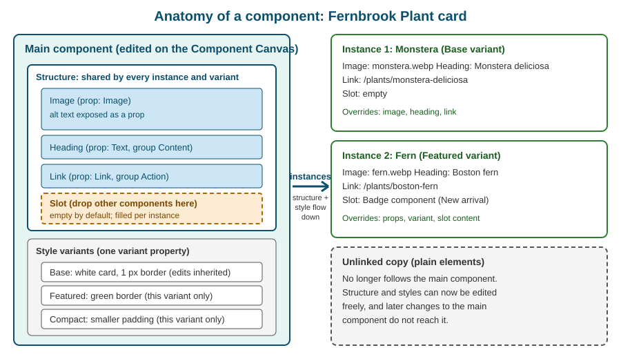

Components, Props, Slots and Variants
|
This content was generated with the assistance of AI and should be verified against the official documentation before being relied on in production. |
This page was checked against the Webflow Help Center, Webflow University, the Webflow updates feed and the Webflow developer documentation on 2026-10-28. Webflow is a hosted service without version numbers, so a menu can move or gain options between two visits. Components are available on every plan, including the free Starter Site plan inside a Starter Workspace; sharing components between sites through a library depends on the Workspace plan tier and is covered in Shared Libraries. The Designer API example uses @webflow/designer-extension-typings 2.2.2.
A class answers the question "how does this kind of element look?". A component answers a bigger question: "what is this whole chunk of the page, and which parts of it may change from one use to the next?". Components are the unit of reuse in Webflow. A designer builds a navigation bar, a footer, a plant card or a call-to-action once, turns it into a component, and places it wherever it is needed. Editing the original updates every use, while properties, slots and variants let each use differ in exactly the ways the designer allows. This page explains each of those ideas, the way the Component Canvas works, how instances behave, how components appear inside CMS content, and where the feature came from.
The running example is the Fernbrook Gardens site, a fictitious botanical garden. The job on this page is to build a "Plant card" component for the plant catalogue: an image, a common name, a short description and a link, with an optional badge such as "New arrival", in a base style, a "Featured" style and a "Compact" style. The same card is then used on the home page, on a category page and, through a CMS item, in a Fernbrook Journal article.
The next pages build on this one. Shared Libraries shares components and variables across sites, Building a Design System puts components, variables and classes together, Collection Lists explains how to fill components from CMS data, and Code Components covers components written in React.
Components versus classes
Both features remove repetition, but at different levels, and confusing them is a common source of messy sites.
| Aspect | Class | Component |
|---|---|---|
What it reuses |
A set of style declarations, applied to any element |
A whole element tree: structure, content defaults, classes and interactions |
Where it is edited |
In the Style panel, on any element that carries it |
On the Component Canvas, on the main component |
What changes between uses |
Nothing, unless a combo class is stacked |
Only what the designer exposed: props, slot content and the variant |
Effect on the HTML |
Adds a class name to the element |
Repeats the same markup tree for every instance |
Typical Fernbrook use |
|
Navbar, footer, plant card, newsletter signup |
A component is built from classes. The Plant card contains a card wrapper with the class plant-card, a heading with plant-card_title and so on, and those classes keep working as described in Classes, Combo Classes and Selectors. The component adds a second layer on top: which instances exist, which of their values differ, and which edits propagate. A few rules of thumb follow.
-
Use a class when only the look repeats, for example a button style used inside many different layouts.
-
Use a component when the structure repeats as well, for example a card made of an image, a title, a paragraph and a link.
-
Use a combo class for a one-off visual change on a single element, and a style variant for a named visual change of a whole component that has to stay consistent on every use.
-
Use a component, not copy and paste, for anything that must stay in step across pages. A pasted navigation bar has to be fixed on every page by hand; a component is fixed once.
The Webflow Way guidance on design systems makes the same split: classes and variables are the styling vocabulary, components are the reusable blocks assembled from them.
Source: Webflow Way: Components
The anatomy of a component

The figure is an original schematic. Four parts are always present.
-
The main component: the single definition. It owns the element tree, the classes applied inside it, the properties, the slots and the variants. Everything is edited here, and only here.
-
Instances: the places where the component is used. An instance renders the main component’s tree. It cannot change the structure or the styles, but it can change whatever the main component exposes.
-
Properties (props): named controls that bind a value of an inner element, such as a text, an image or a link, to a field in the instance’s settings.
-
Slots and variants: a slot is an empty area that accepts other components, and a variant is a named alternative look of the whole component.
The set of things that may vary is therefore decided by the designer who builds the component, not by the person who places it. That is the central design principle: a marketer can change the plant name, swap the photo and choose "Featured", but cannot accidentally move the link above the image.
Creating a component
A component is created from existing elements, which is the natural flow: build the card first, then promote it.
-
Build the elements on a page, with classes, and check that the card looks right at every breakpoint.
-
Select the root element of the card, here the
plant-cardDiv Block. -
Right-click it and choose Create component, or use the component icon in the Navigator or the Elements panel, and give it a name such as
Plant card. -
The selected element becomes the main component, the Designer replaces the original with an instance, and the component appears in the Components panel.
Several details matter.
-
The name is the label shown to every other designer and in the Navigator, so follow the naming system agreed on the site. A short noun phrase such as
Plant cardorSite footeris enough. -
The root should be a single element. A component with two sibling roots is wrapped in a parent first.
-
Some elements cannot be turned into a component or cannot sit inside one. Elements that are bound to a page-level context, for example the Collection Page layout itself, stay outside; a Collection List can be inside a component, with the limits explained in the section on rich text below.
-
A main component cannot be duplicated directly. To start a second component from the first, unlink an instance and create a new component from the copy.
-
Components live in the Components panel with folders, can be renamed and, when no longer wanted, deleted. Deleting a component that is still in use asks what to do with the instances, normally converting them to plain elements.
The same promotion can be done from the Designer API with webflow.registerComponent(), shown later on this page.
Editing on the Component Canvas
To change the main component, a designer enters it. Double-click any instance, or choose the edit action on the instance, and the Designer opens the Component Canvas: a dedicated working area that shows only the component, away from the page it is used on. The change was announced in the Webflow updates feed under the name "Component canvas".
On the Component Canvas:
-
the Navigator and the Style panel behave as on a page, but every edit applies to the main component and therefore to every instance;
-
the component is shown in frames, one per breakpoint and one per variant, so that a designer can see the base layout and each variant side by side instead of switching back and forth;
-
the frame size and the frame background inherit from the base variant and the base breakpoint, which is desktop, by default, and either can be overridden on a single frame to preview the component on a dark or coloured section;
-
structure and properties are shared across all frames, because they belong to the component, not to a variant;
-
the exit control returns to the page, which now shows the updated instances.
Because one edit can affect dozens of pages, the Canvas is the place to be deliberate. Check the Navigator for the property indicators, test with long text and with an empty slot, and look at the mobile breakpoint before leaving. A change published to the site affects every page that uses the component at once, so large edits are better made on a branch, as described in Page Branching, Releases and Approvals.
Properties
A property, often called a prop, connects one setting of an inner element to the instance. Without properties every instance of the Plant card would show the same heading and the same photo, which is a copy of one card, not a catalogue. With properties each instance holds its own value while the structure stays shared.
Creating a property
-
Enter the component on the Component Canvas.
-
Select the inner element, for example the heading.
-
Open the settings of that element and click the purple dot next to the value that should become a property: the text of a heading, the source of an image, the URL of a link.
-
Choose Create property, or bind to an existing property of a compatible type, and give it a name such as
Common name.
The dot turns purple and the field shows the property name, which is the visual sign that the value is now controlled by the instance. The name appears as a field in the right-hand settings of every instance and, importantly, in the label of any CMS or code integration that targets the component.
Property types
The set of types follows the kind of value being exposed. At the time of the check the Designer offers the following.
| Type | What it controls | Fernbrook example |
|---|---|---|
Text |
The plain text of a text element such as a heading, paragraph, button label or text link |
The common name of a plant |
Rich text |
A formatted block with headings, lists, links and emphasis |
A short description with a bold Latin name |
Image |
The source of an image element, with its alt text |
The plant photograph |
Link |
The destination, the target and other link settings of a Link Block, Button or Text Link |
The plant detail page |
Video |
The source of a video element |
A short garden tour clip |
Number |
A numeric value |
Number of visitors a greenhouse holds |
Visibility |
A true or false switch that shows or hides an element for that instance |
Show or hide the "New arrival" badge |
ID |
The HTML |
The anchor of a section component |
Slot |
An area filled by other components, see the next section |
Optional badge or footer content |
Variant |
Selects the style variant of the instance, see the variants section |
Base, Featured or Compact |
For the exact list of types and the current names of the controls, use the Component properties article, because Webflow adds types without renaming the feature. The developer documentation for DevLink lists the same basic types (Text, Video, Link, Rich text, Number and Visibility) plus Attributes and Slots, because that is the set that can be converted into typed React props.
Two behaviours deserve attention.
-
Visibility removes the element from the page. A hidden element is not rendered in the published HTML, so it is not in the accessibility tree and cannot be reached with the keyboard. This differs from setting
display: nonethrough a class on an element that stays in the markup. -
Alt text travels with the image. An Image property carries the alt text field of its instance, so each Fernbrook plant photo can have its own description. Leaving it empty on a decorative image is correct; leaving it empty on a content image is an accessibility defect. Rules for choosing are in Accessibility.
Property groups
A component with many properties becomes a long form. Properties can be placed in groups, collapsible sections in the instance settings. For the Plant card a sensible layout is:
-
group Content: Common name (Text), Description (Rich text), Photo (Image);
-
group Action: Detail page (Link);
-
group Display: Show badge (Visibility), Style (Variant).
When a nested component contributes its own properties, they appear in a group named after the nested component, so a Button inside the card is shown under a "Button" group with its own Link and Text properties. Groups cost nothing in the output; they only organise the editing experience for the person placing the component.
Suggested properties and default names
Creating a property used to mean typing a name for every one. Since the April 2025 update "Component property naming improvements", a property created from an element setting or from a nested component’s property receives a more useful default name and is placed in a group automatically, derived from the element and the setting. For the card heading the Designer proposes a name based on the element rather than a generic label such as "Text". Accept the suggestion when it is clear, and rename it when the property will be read by a content editor who has never seen the Navigator. Names that describe the content ("Common name") are better than names that describe the element ("Heading text").
Default values and resetting an override
The value a designer types in the main component when creating a property becomes the default shown by every new instance. An instance that has not been changed follows the default, so changing the default later changes those instances. When an instance edits a property it holds an override. Overrides are marked in the settings, and a reset control returns the property to the default of the component. The Designer API exposes the same operations, described below.
What properties cannot do
-
A property exposes content and behaviour switches, not styles. A property cannot make an instance 20 px wider or change a colour. Visual differences belong to variants or to a slot’s content.
-
A property is bound to elements inside the component. It cannot read another component’s property or a CMS field by itself; CMS binding is described in the next sections.
-
Properties are defined in the Designer. The Designer API can read and set the values of properties on an instance, but at the time of the check it cannot create or manage property definitions; the developer documentation lists that as planned.
Slots and nested components
Properties cover single values. A slot covers a whole region. A slot is a placeholder element, added from the Elements panel inside the main component, that accepts any other components when the component is used. The idea comes from the Web Components specification, where a slot is the place that receives the child content of a custom element.
For the Plant card a slot named Card footer below the link lets some cards carry a "New arrival" badge, others a "Add to visit plan" button and others nothing. Without a slot the designer would need a Visibility property for every possible extra, and the card would grow a pile of hidden elements.
Working with slots
-
Enter the component on the Component Canvas.
-
Add a Slot element where the extra content should appear and give it a descriptive name.
-
Leave the Canvas. On every instance, the slot shows as an empty drop area.
-
Drag components from the Components panel, or other supported elements, into the slot of that instance.
Design points to keep in mind:
-
The content of a slot is per instance. Two cards can carry different slot content, and the main component is not changed.
-
A slot is empty by default. The main component cannot pre-fill it with default components, so design the component to look correct when the slot is empty, for example with no extra padding reserved for it.
-
Slots accept components. They are meant for composition, such as a Card that holds a Badge, a Section that holds a Heading component and a Button component, or a Modal that holds any content. They are not an escape hatch for loose styled elements.
-
Slots cannot be placed everywhere. At the time of the check they are not available inside certain elements, for example Link Blocks, Form Blocks and Collection Items. Treat the Components overview and Slots articles as the authority for the current list.
-
A slot exposed as a prop appears in the instance’s properties list with the type Slot, and in DevLink it becomes a typed
React.ReactNodeprop. -
Deleting or replacing the slot in the main component affects the content placed in it on every instance, so rename slots deliberately and not often.
Nested components
A component can contain other components, in two ways.
-
Fixed nesting: an instance of the Badge component is placed inside the main Plant card. The Badge is part of the card’s definition. The card’s author can expose the badge’s own properties through the card, which then appear under a group named after the Badge.
-
Slot content: an instance of the Badge is dropped into the card’s slot on a specific instance. The Badge belongs to that instance only.
Fixed nesting suits parts that every card always has, such as a button; slots suit parts that only some cards have. Nesting has been possible since the 2020 feature "nested symbols" and is the reason component trees such as Page section > Card grid > Plant card > Button are common in mature sites. Deep nesting costs readability in the Navigator, so keep it to the depth a colleague can still follow.
Source: Webflow Help Center: Slots
Style variants
A style variant is a named alternative appearance of the whole component. The Plant card has a Base variant and two more, Featured and Compact. An instance chooses one through a Variant property, so the person placing the card picks "Featured" from a drop-down and does not touch the Style panel.
Creating variants
-
Enter the component on the Component Canvas.
-
Open the variants control and add a variant, then name it.
-
Select the new variant frame and style the elements of the component in it, with the Style panel as usual. Only the variant being edited changes.
-
Return to the page and choose the variant in the instance settings.
The rules that define the behaviour are few and worth learning exactly.
-
The base variant is the parent. Styles edited in the base variant are inherited by every other variant. Styles edited inside another variant apply to that variant only and override the base for the properties they set.
-
Structure and properties are shared. A variant changes how things look, not which elements exist or which properties the component has. A variant that needs a different structure is better built as a separate component or with a Visibility property.
-
A component has exactly one variant property, and it can hold as many variants as needed.
-
Every instance picks one variant. Different instances of the same component can use different variants on the same page.
-
Deleting a variant is safe for instances. Instances that used the deleted variant revert to the base variant. The base variant itself cannot be deleted.
-
Breakpoints still apply inside each variant. A variant can set different values per breakpoint, and the Canvas shows each variant frame at the breakpoint being edited.
What a variant writes
Variants compile to CSS classes, like everything else in Webflow. The Featured variant of the card is delivered as an extra class on the instance’s root element and the variant’s style rules are keyed to it. A simplified view of the generated markup and CSS follows. The class names Webflow generates are internal and may differ; do not write site CSS that depends on them, and use properties or your own classes for hooks.
<!-- Instance in Base variant -->
<div class="plant-card">
<img class="plant-card_image" src="monstera.webp" alt="Monstera deliciosa leaf in the Fernbrook greenhouse" loading="lazy">
<h3 class="plant-card_title">Monstera deliciosa</h3>
<a class="plant-card_link" href="/plants/monstera-deliciosa">See details</a>
</div>
<!-- Instance in Featured variant: same tree, extra variant class -->
<div class="plant-card plant-card--featured">
<img class="plant-card_image" src="fern.webp" alt="Boston fern fronds" loading="lazy">
<h3 class="plant-card_title">Boston fern</h3>
<a class="plant-card_link" href="/plants/boston-fern">See details</a>
</div>.plant-card {
border: 1px solid #d8e2d4;
padding: 24px;
background-color: #ffffff;
}
.plant-card--featured {
border-color: #2f7d32;
box-shadow: 0 6px 18px rgba(27, 94, 32, 0.18);
}Variants, combo classes or separate components
| Need | Best tool | Why |
|---|---|---|
The same card in a calmer or louder style |
Style variant |
One definition, one drop-down, styles checked on the Canvas |
One-off tweak on a single element in a single place |
Combo class on a non-component element |
No need to alter shared definitions |
A card that has a different structure, for example a long article card |
Separate component |
Variants share structure |
An optional extra such as a badge |
Slot or Visibility property |
Content differs, not styling |
Instances and overrides
An instance is a placed copy of a component. In the Navigator it shows a component icon and the component name. Selecting it shows, in the settings panel, the properties, the slots and the variant selector; the Style panel is locked, because the styles belong to the main component. Locked does not mean broken: it is the visible form of the rule that an instance may change only what was exposed.
The vocabulary used by the Designer and the API is consistent.
-
Default: the value stored in the main component.
-
Override: a value set on one instance that differs from the default. Each property can be overridden individually.
-
Reset: removing the override so the instance follows the default again.
-
Resolved value: the value the instance actually renders, either its override or the default.
The editing flow for a Fernbrook content editor is therefore: place the Plant card instance, fill Common name, Photo and Detail page, choose a variant, optionally drop a Badge into the slot and publish. None of these steps can damage the card definition.
A component placed inside a Collection List, with its properties filled from the current CMS item, is how the plant catalogue is normally built. Binding an instance property to a CMS field is done on the item in the Designer, and the details of field types and binding belong to Collection Lists and Collections and Field Types. Slots inside such an instance are filled per instance on the page; they are not bound to the CMS.
Editing the main component from an instance
Choosing the edit action on an instance opens the Component Canvas for the main component, not for that instance. Every other instance changes with it. For components that are used widely, check the usage first. A component with a high number of instances should be changed on a branch or at a quiet time, with the site published only after review.
Unlinking an instance
To make one use diverge permanently, unlink the instance: right-click it and choose Unlink instance. The result is a plain copy of the element tree with the classes it had, and:
-
it no longer follows the main component, so later edits to the main component do not reach it;
-
its property values are applied as ordinary content, and its slot content becomes ordinary child elements;
-
the structure and styles can now be edited freely in the Style panel;
-
the operation can be undone immediately, but not after unrelated work, so be sure before publishing.
Unlinking is also the supported way to start a second component from an existing one, since a main component cannot be duplicated directly: unlink an instance, adjust it and promote it with Create component. Prefer a variant or a slot to unlinking whenever the difference is part of a pattern, because unlinked copies are the first thing to rot in a design system and are hard to find later.
Components in CMS items and rich text
Components reach CMS content in two ways.
Components in a Collection List or Collection Page
A component can sit inside a Collection List item or in a Collection Template page. Its text, image and link properties can be bound to fields of the current item. That is the standard way to render the Fernbrook plant grid: one Plant card instance inside the Collection List item, each property bound to a field. The authoring detail is in Collection Lists and Collection Template Pages.
Components inside a Rich Text field
A Rich Text field can hold a component instance. The Fernbrook Journal editor presses the slash key in the field, in the CMS panel or on the canvas, chooses Component and picks, for example, a Callout component for a gardening tip. Properties are then set separately for each item, which lets a single article carry several different callouts. Changes are saved automatically and become public when the site is published.
The constraints are specific.
-
A component that contains a Collection List cannot go into a Rich Text field.
-
Components inside rich text cannot be bound to the CMS, and their slots cannot be exposed. Their properties are filled by hand per item.
-
An existing instance cannot be dragged into a Rich Text element from the canvas or the Navigator. Add a new instance with the insert menu of the rich text.
-
Through the Data API, a component instance in a Rich Text field is the
wf-componentmarkup shown below. A write that includes a component with a slot that is filled, a Collection List, an unknown component identifier or an unknown property fails with a 400 error and nothing is saved, and new instances can only be created in the primary locale.
<wf-component
component-id="<component-id>"
name="Callout"
prop-<scalarPropId>="Water early in the morning">
<wf-prop name="<textPropId>" label="Body" type="richtext">
<p>Morning watering loses less water to evaporation.</p>
</wf-prop>
</wf-component>The identifiers are specific to the site and come from the list-components and list-component-properties calls of the Data API. Scalar properties travel as prop-<id> attributes and text or rich text properties as nested wf-prop elements. See Data API: CMS for the CMS endpoints and Data API: Sites, Pages and Components for the component endpoints.
Components from code
The Designer API (Designer Extensions) can create, enter and place components. It cannot yet create property definitions, but it can read and write property values and read slots. A sketch for a Fernbrook extension that reads the properties of a selected Plant card instance follows.
// Designer Extension script, @webflow/designer-extension-typings 2.2.2
// Read the property values of the selected Plant card instance, then set one override.
const selected = await webflow.getSelectedElement();
if (selected && selected.type === "ComponentInstance") {
const props = await selected.getProps();
console.log("Stored property values", props);
// setProps accepts static overrides, bindings and resets; see the reference for the exact shape.
}The same reference documents webflow.registerComponent() to turn an element tree into a component definition, webflow.enterComponent() to open a definition for editing and webflow.createInstance() to place an instance on the page.
Once an instance exists, the Component Instance methods read and change it: getComponent returns the definition, getProps and getResolvedProps return the stored and rendered values, setProps sets overrides, bindings and resets, resetAllProps restores the defaults and getSlots returns the slots. The method list is on the Component Instances reference page.
Components can also be written in React and imported into Webflow, which is the subject of Code Components, and exported to a React project with DevLink, where properties become typed props and slots become React.ReactNode props (DevLink Export).
From Symbols to Components: a short history
-
Symbols (until 2022). Webflow’s first reuse feature was Symbols: select elements, convert them to a Symbol and edit the original to update every copy. Content and styles were fully shared, so the same Symbol could not show a different heading on a different page.
-
Nested symbols (2020). Symbols could contain other Symbols, which made layered navigation bars and sections practical.
-
Content overrides (2020 to 2021). Text, images and links could be overridden per instance on the page, the forerunner of properties.
-
Symbols in their own panel. Symbols moved to a dedicated panel in the Designer, separate from the Elements panel.
-
"Symbols" evolved to "Components" (9 November 2022). The feature was renamed and the model changed: overrides became component properties that the designer defines explicitly, and the Components panel replaced the Symbols panel. The rename announced investment in reusability, workflow and control.
-
Property improvements (2022 and 2025). Property creation was simplified in 2022 and received better default names and groups on 24 April 2025.
-
Component style variants. Variants arrived afterwards as a new layer on top of properties, so a whole component can change look.
-
Component slots. Slots added the composition capability of the Web Components specification.
-
Component Canvas. A dedicated canvas with frames per variant and breakpoint for editing the main component.
-
Components in rich text. Components became insertable into Rich Text fields, with the Data API representing them as
wf-component.
If a book or tutorial speaks of "Symbols", read it as "Components" with the older model: the equivalent of a symbol’s per-instance override is a property that you must create on purpose. See Product Changes and Deprecations for other renamed features.
A design checklist for a Fernbrook component
-
Name the component for what it is, with a name a colleague can find:
Plant card, notCard 2. -
Build it with classes that follow the agreed naming system (Class Naming Systems) and check every breakpoint before promoting it.
-
Decide what may differ between uses and expose exactly that as properties, with content-oriented names, in groups.
-
Use a Visibility property for a single optional element and a slot for optional composed content.
-
Add variants only for visual alternatives. Style shared things in the base variant so that every variant inherits them.
-
Make the component work when text is long, when the slot is empty and when an image is missing.
-
Give images meaningful alt text properties and keep headings and landmarks valid: an unfilled heading property still produces an empty heading, which screen readers announce.
-
Record the component in the site’s style guide page and decide who may edit it (see Building a Design System).
Output and performance
Components are an authoring concept. The published HTML of an instance is ordinary markup: the same tree repeated for every instance, with the instance’s values filled in. There is no runtime component framework, no extra JavaScript and no custom elements generated by Webflow for native components. Two consequences follow.
-
Using ten components or ten copies of the same markup gives the same page weight; the benefit is maintenance, not speed.
-
The CSS of every variant is part of the site stylesheet, even if a page uses only the base variant. Variants are cheap, but a long tail of unused variants is clutter.
Components from a shared library are copied into each installed site, so the output of a library component on a site is also plain HTML and CSS.
Pitfalls
-
Editing the main component to fix one page. Everything changes everywhere. Use a property, a variant or a slot, or unlink the instance if the divergence is intended.
-
Exposing everything as properties. A component with twenty properties is a form nobody wants to fill. Expose what changes, in groups.
-
Using Visibility for composed content. Several hidden extras make the component heavy. Use a slot.
-
Variants that change structure. They cannot; the elements are shared. Use a separate component.
-
Expecting a slot to hold a default. Slots are empty by default; design the empty state.
-
Unlinking and forgetting. Unlinked copies no longer receive fixes. Record each one or avoid unlinking.
-
Styling by instance. The Style panel is locked on instances. If a designer needs a one-off visual tweak, the pattern probably deserves a variant.
-
Leaving alt text and link text empty. Properties make it easy to fill content with defaults like "Image"; set required values deliberately.
-
Deep nesting. A tree five components deep is hard to read in the Navigator and hard to hand over.
-
Deleting a component without checking usage. The instances are converted to plain elements and stop being maintained.
-
Putting components in rich text and expecting CMS binding. Their properties are per item and manual.
Security and governance
Components do not add a new security surface on their own: they publish static markup. Governance matters more than security.
-
Decide who may edit main components. On Workspace plans with roles, Designer access is what allows entering the Component Canvas, while a Content editor can only use the Editor to change content; see Plans, Workspaces, Seats and Roles.
-
A component that embeds custom code is shared with every instance; review it like any other code (Custom Code in the Head, Footer and Embeds).
-
An ID property lets an instance set an HTML
id. Two instances on one page with the sameidproduce invalid HTML and break anchors and label associations, so give each a unique value. -
Do not put real personal data or credentials into property defaults of a component that is shared in a library.
Corrections to older tutorials
-
"Symbols are Webflow’s reusable elements." Symbols were renamed Components on 9 November 2022 and gained properties; there is no Symbols panel any more.
-
"Symbols have content overrides on text, image and link." Components expose properties that the designer defines; nothing is overridable unless it was exposed.
-
"A component always looks the same everywhere." Variants and slots now allow controlled differences, and a component can have one variant property.
-
"Editing a symbol happens on the page." Editing is done on the Component Canvas.
-
"You cannot put components inside components." Nesting has been supported since 2020, and slots add instance-level composition.
-
"CMS content cannot contain components." Rich Text fields accept component instances, with the constraints above.
-
"Copy a navbar to every page." A navbar component is edited once and reaches every page; the copy approach is obsolete.